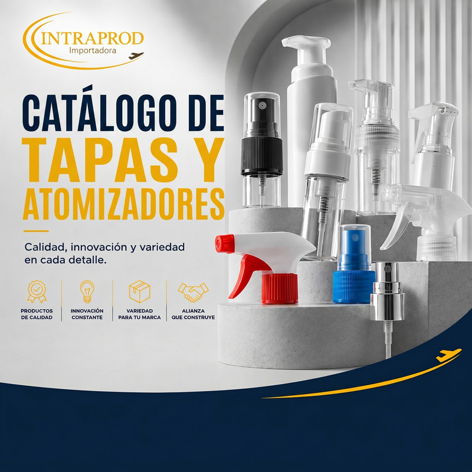
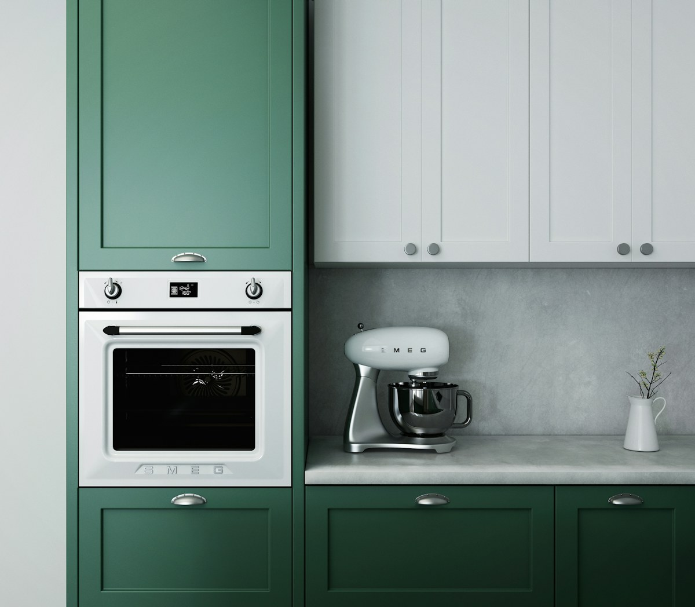

Tapas y dosificadores
Tapas atomizadoras, pulverizadores y componentes para distintas soluciones de envase.
Ver catálogoImportación y distribución
Resolvemos necesidades de abastecimiento industrial y comercial mediante importación, distribución y atención directa desde Cochabamba.
Categorías
Encuentra líneas seleccionadas y solicita apoyo para abastecimientos especiales en Bolivia.

Tapas atomizadoras, pulverizadores y componentes para distintas soluciones de envase.
Ver catálogo
Conoce la línea disponible y recibe orientación comercial, de instalación y soporte.

Productos seleccionados para hogares, comercios y oportunidades de distribución.
Consultar productosAtención para productos específicos y requerimientos de abastecimiento por encargo.
Solicitar cotizaciónASTOM B en Bolivia
Revisa el catálogo oficial y conversa directamente con el canal dedicado de ASTOM B para elegir la alternativa adecuada a tu necesidad.
¿Por qué INTRAPROD?
Combinamos conocimiento de producto, atención cercana y acceso comercial para acompañar cada consulta.
Conocemos líneas concretas y ayudamos a identificar la opción que mejor responde a cada uso.
Atendemos requerimientos comerciales desde Cochabamba con coordinación directa.
Mantenemos un canal comercial accesible antes, durante y después de cada consulta.
Apoyamos la búsqueda de productos y el acceso a fabricantes para importaciones por encargo.
Contacto directo
Escríbenos por WhatsApp y cuéntanos qué producto, cantidad o solución de abastecimiento necesitas.
Ubicación
Visítanos en C. Junín #732, entre La Paz y Tomsich, Cochabamba, Bolivia.
Abrir en Google Maps